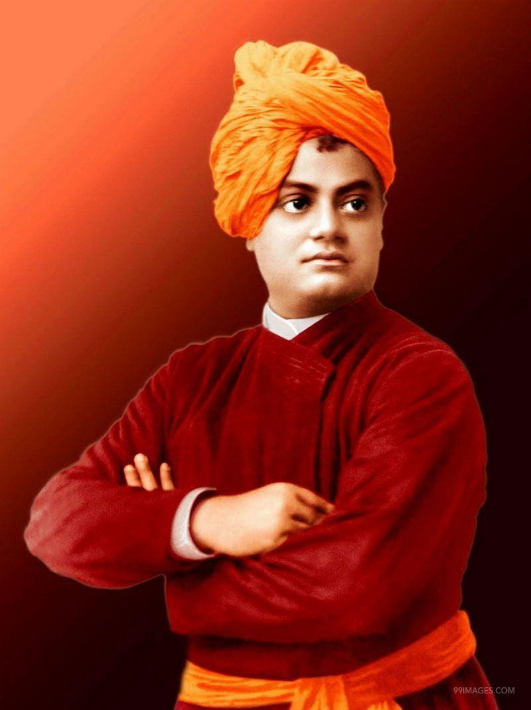

Tribute to Swami Vivekananda

Swami Vivekananda (1863-1902) was an Indian Hindu monk and a key figure in introducing Indian philosophies of Vedanta and Yoga to the Western world. He gained widespread recognition for his inspiring speech at the Parliament of the World's Religions in Chicago in 1893. Vivekananda emphasized the universality of religions and the importance of self-realization. His teachings continue to influence spiritual thought and interfaith dialogue.
Swami Vivekananda, born Narendranath Datta, was a disciple of the Indian mystic Ramakrishna Paramahansa. He founded the Ramakrishna Math and the Ramakrishna Mission to propagate the ideals of service, harmony, and spirituality. Vivekananda's teachings stress the unity of all religions and the potential divinity within every individual. He played a crucial role in revitalizing Hinduism and promoting its values globally. His impact on modern Indian thought and his legacy as a spiritual leader remain profound.
Early Life
- Birth:Swami Vivekananda was born as Narendranath Datta on January 12, 1863, in Calcutta, British India.
- Education:
- Vivekananda attended Presidency College in Calcutta, demonstrating academic prowess and a wide-ranging interest in subjects.
- During his college years, he engaged in a diverse range of subjects, including Western philosophy and science, showcasing a multidimensional approach to learning.
- While pursuing formal education, Vivekananda's encounter with spiritual philosophies and, most notably, his association with Ramakrishna Paramahansa significantly influenced his spiritual awakening and subsequent life path.
- Spiritual Transformation:After meeting his guru, Ramakrishna Paramahansa,
Vivekananda underwent a profound spiritual transformation, shaping his future mission and teachings.
Life and Legacy of Swami Vivekananda
- Meeting Ramakrishna Paramahansa:Meeting Ramakrishna Paramahansa:
- Monastic Life: After the death of Ramakrishna in 1886, Narendranath embraced monastic life and took the name Swami Vivekananda. He traveled extensively across India, gaining a deep understanding of the country's social and economic conditions.
- World Parliament of Religions:Swami Vivekananda gained international recognition for his speech at the World's Parliament of Religions held in Chicago in 1893. His opening words, "Sisters and Brothers of America," received a standing ovation. This event marked the introduction of Hindu philosophy to the Western audience.
- Mission for Humanity:Swami Vivekananda was not just a spiritual leader; he was also a social reformer. He emphasized the importance of tolerance, universal acceptance, and the need for selfless service to humanity. His teachings emphasized the idea of the divinity of the soul and the oneness of all religions.
- Formation of Ramakrishna Mission: In 1897, Swami Vivekananda founded the Ramakrishna Mission, a spiritual and humanitarian organization. The mission is engaged in various philanthropic activities, including educational institutions, hospitals, and relief work.
- Death:
Swami Vivekananda passed away on July 4, 1902, at the young age of 39.
Learn more about Swami Vivekananda
"Arise, awake, and stop not until the goal is reached."